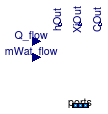
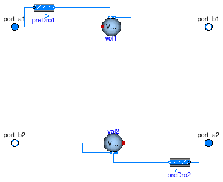
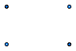
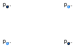
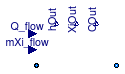
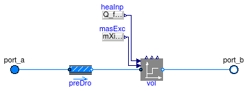

Package with interfaces for fluid models
Information
This package contains basic classes that are used to build
component models that change the state of the
fluid. The classes are not directly usable, but can
be extended when building a new model.
Extends from Modelica.Icons.InterfacesPackage (Icon for packages containing interfaces).
Package Content
Lumped volume with mass and energy balance

Information
Basic model for an ideally mixed fluid volume with the ability to store mass and energy.
It implements a dynamic or a steady-state conservation equation for energy and mass fractions.
The model has zero pressure drop between its ports.
Implementation
When extending or instantiating this model, the input
fluidVolume, which is the actual volume occupied by the fluid,
needs to be assigned.
For most components, this can be set to a parameter.
Input connectors of the model are
-
Q_flow, which is the sensible plus latent heat flow rate added to the medium, and
-
mWat_flow, which is the moisture mass flow rate added to the medium.
The model can be used as a dynamic model or as a steady-state model.
However, for a steady-state model with exactly two fluid ports connected,
the model
Buildings.Fluid.Interfaces.StaticTwoPortConservationEquation
provides a more efficient implementation.
For a model that instantiates this model, see
Buildings.Fluid.MixingVolumes.MixingVolume.
Extends from Buildings.Fluid.Interfaces.LumpedVolumeDeclarations (Declarations for lumped volumes).
Parameters
| Type | Name | Default | Description |
|---|
| replaceable package Medium | PartialMedium | Medium in the component |
| Dynamics |
| Equations |
| Dynamics | energyDynamics | Modelica.Fluid.Types.Dynamic... | Formulation of energy balance |
| Dynamics | massDynamics | energyDynamics | Formulation of mass balance |
| Initialization |
| AbsolutePressure | p_start | Medium.p_default | Start value of pressure [Pa] |
| Temperature | T_start | Medium.T_default | Start value of temperature [K] |
| MassFraction | X_start[Medium.nX] | Medium.X_default | Start value of mass fractions m_i/m [kg/kg] |
| ExtraProperty | C_start[Medium.nC] | fill(0, Medium.nC) | Start value of trace substances |
| ExtraProperty | C_nominal[Medium.nC] | fill(1E-2, Medium.nC) | Nominal value of trace substances. (Set to typical order of magnitude.) |
Connectors
| Type | Name | Description |
|---|
| VesselFluidPorts_b | ports[nPorts] | Fluid inlets and outlets |
| input RealInput | Q_flow | Sensible plus latent heat flow rate transfered into the medium [W] |
| input RealInput | mWat_flow | Moisture mass flow rate added to the medium [kg/s] |
| output RealOutput | hOut | Leaving enthalpy of the component [J/kg] |
| output RealOutput | XiOut[Medium.nXi] | Leaving species concentration of the component [1] |
| output RealOutput | COut[Medium.nC] | Leaving trace substances of the component |
Modelica definition
model ConservationEquation
"Lumped volume with mass and energy balance"
// outer Modelica.Fluid.System system "System properties";
extends Buildings.Fluid.Interfaces.LumpedVolumeDeclarations;
// Port definitions
parameter Integer nPorts=0
"Number of ports";
Modelica.Fluid.Vessels.BaseClasses.VesselFluidPorts_b ports[nPorts](
redeclare each package Medium = Medium)
"Fluid inlets and outlets";
// Set nominal attributes where literal values can be used.
Medium.BaseProperties medium(
preferredMediumStates=
not (energyDynamics == Modelica.Fluid.Types.Dynamics.SteadyState),
p(start=p_start,
nominal=Medium.p_default,
stateSelect=
if not (massDynamics == Modelica.Fluid.Types.Dynamics.SteadyState)
then StateSelect.prefer
else StateSelect.default),
h(start=hStart),
T(start=T_start,
nominal=Medium.T_default,
stateSelect=
if (
not (energyDynamics == Modelica.Fluid.Types.Dynamics.SteadyState))
then StateSelect.prefer
else StateSelect.default),
Xi(start=X_start[1:Medium.nXi],
nominal=Medium.X_default[1:Medium.nXi],
each stateSelect=
if (
not (substanceDynamics == Modelica.Fluid.Types.Dynamics.SteadyState))
then StateSelect.prefer
else StateSelect.default),
d(start=rho_nominal))
"Medium properties";
Modelica.SIunits.Energy U
"Internal energy of fluid";
Modelica.SIunits.Mass m
"Mass of fluid";
Modelica.SIunits.Mass[Medium.nXi] mXi
"Masses of independent components in the fluid";
Modelica.SIunits.Mass[Medium.nC] mC
"Masses of trace substances in the fluid";
// C need to be added here because unlike for Xi, which has medium.Xi,
// there is no variable medium.C
Medium.ExtraProperty C[Medium.nC](nominal=C_nominal)
"Trace substance mixture content";
Modelica.SIunits.MassFlowRate mb_flow
"Mass flows across boundaries";
Modelica.SIunits.MassFlowRate[Medium.nXi] mbXi_flow
"Substance mass flows across boundaries";
Medium.ExtraPropertyFlowRate[Medium.nC] mbC_flow
"Trace substance mass flows across boundaries";
Modelica.SIunits.EnthalpyFlowRate Hb_flow
"Enthalpy flow across boundaries or energy source/sink";
// Inputs that need to be defined by an extending class
input Modelica.SIunits.Volume fluidVolume
"Volume";
Modelica.Blocks.Interfaces.RealInput Q_flow(unit="W")
"Sensible plus latent heat flow rate transfered into the medium";
Modelica.Blocks.Interfaces.RealInput mWat_flow(unit="kg/s")
"Moisture mass flow rate added to the medium";
// Outputs that are needed in models that extend this model
Modelica.Blocks.Interfaces.RealOutput hOut(unit="J/kg",
start=hStart)
"Leaving enthalpy of the component";
Modelica.Blocks.Interfaces.RealOutput XiOut[Medium.nXi](
each unit="1",
each min=0,
each max=1)
"Leaving species concentration of the component";
Modelica.Blocks.Interfaces.RealOutput COut[Medium.nC](
each min=0)
"Leaving trace substances of the component";
protected
parameter Boolean initialize_p =
not Medium.singleState
"= true to set up initial equations for pressure";
Medium.EnthalpyFlowRate ports_H_flow[nPorts];
Modelica.SIunits.MassFlowRate ports_mXi_flow[nPorts,Medium.nXi];
Medium.ExtraPropertyFlowRate ports_mC_flow[nPorts,Medium.nC];
parameter Modelica.SIunits.Density rho_nominal=
Medium.density(
Medium.setState_pTX(
T=T_start,
p=p_start,
X=X_start[1:Medium.nXi]))
"Density, used to compute fluid mass";
// Parameter that is used to construct the vector mXi_flow
final parameter Real s[Medium.nXi] = {
if Modelica.Utilities.Strings.isEqual(string1=Medium.substanceNames[i],
string2="Water",
caseSensitive=false)
then 1
else 0
for i
in 1:Medium.nXi}
"Vector with zero everywhere except where species is";
parameter Modelica.SIunits.SpecificEnthalpy hStart=
Medium.specificEnthalpy_pTX(p_start, T_start, X_start)
"Start value for specific enthalpy";
initial equation
// Assert that the substance with name 'water' has been found.
assert(Medium.nXi == 0
or abs(
sum(s)-1) < 1e-5,
"If Medium.nXi > 1, then substance 'water' must be present for one component.'"
+ Medium.mediumName + "'.\n"
+ "Check medium model.");
// Make sure that if energyDynamics is SteadyState, then
// massDynamics is also SteadyState.
// Otherwise, the system of ordinary differential equations may be inconsistent.
if energyDynamics == Modelica.Fluid.Types.Dynamics.SteadyState
then
assert(massDynamics == energyDynamics, "
If 'massDynamics == Modelica.Fluid.Types.Dynamics.SteadyState', then it is
required that 'energyDynamics==Modelica.Fluid.Types.Dynamics.SteadyState'.
Otherwise, the system of equations may not be consistent.
You need to select other parameter values.");
end if;
// initialization of balances
if energyDynamics == Modelica.Fluid.Types.Dynamics.FixedInitial
then
medium.T = T_start;
else
if energyDynamics == Modelica.Fluid.Types.Dynamics.SteadyStateInitial
then
der(medium.T) = 0;
end if;
end if;
if massDynamics == Modelica.Fluid.Types.Dynamics.FixedInitial
then
if initialize_p
then
medium.p = p_start;
end if;
else
if massDynamics == Modelica.Fluid.Types.Dynamics.SteadyStateInitial
then
if initialize_p
then
der(medium.p) = 0;
end if;
end if;
end if;
if substanceDynamics == Modelica.Fluid.Types.Dynamics.FixedInitial
then
medium.Xi = X_start[1:Medium.nXi];
else
if substanceDynamics == Modelica.Fluid.Types.Dynamics.SteadyStateInitial
then
der(medium.Xi) =
zeros(Medium.nXi);
end if;
end if;
if traceDynamics == Modelica.Fluid.Types.Dynamics.FixedInitial
then
C = C_start[1:Medium.nC];
else
if traceDynamics == Modelica.Fluid.Types.Dynamics.SteadyStateInitial
then
der(C) =
zeros(Medium.nC);
end if;
end if;
equation
// Total quantities
m = fluidVolume*medium.d;
mXi = m*medium.Xi;
U = m*medium.u;
mC = m*C;
hOut = medium.h;
XiOut = medium.Xi;
COut = C;
for i
in 1:nPorts
loop
ports_H_flow[i] = ports[i].m_flow *
actualStream(ports[i].h_outflow)
"Enthalpy flow";
ports_mXi_flow[i,:] = ports[i].m_flow *
actualStream(ports[i].Xi_outflow)
"Component mass flow";
ports_mC_flow[i,:] = ports[i].m_flow *
actualStream(ports[i].C_outflow)
"Trace substance mass flow";
end for;
for i
in 1:Medium.nXi
loop
mbXi_flow[i] =
sum(ports_mXi_flow[:,i]);
end for;
for i
in 1:Medium.nC
loop
mbC_flow[i] =
sum(ports_mC_flow[:,i]);
end for;
mb_flow =
sum(ports.m_flow);
Hb_flow =
sum(ports_H_flow);
// Energy and mass balances
if energyDynamics == Modelica.Fluid.Types.Dynamics.SteadyState
then
0 = Hb_flow + Q_flow;
else
der(U) = Hb_flow + Q_flow;
end if;
if massDynamics == Modelica.Fluid.Types.Dynamics.SteadyState
then
0 = mb_flow + mWat_flow;
else
der(m) = mb_flow + mWat_flow;
end if;
if substanceDynamics == Modelica.Fluid.Types.Dynamics.SteadyState
then
zeros(Medium.nXi) = mbXi_flow + mWat_flow * s;
else
der(mXi) = mbXi_flow + mWat_flow * s;
end if;
if traceDynamics == Modelica.Fluid.Types.Dynamics.SteadyState
then
zeros(Medium.nC) = mbC_flow;
else
der(mC) = mbC_flow;
end if;
// Properties of outgoing flows
for i
in 1:nPorts
loop
ports[i].p = medium.p;
ports[i].h_outflow = medium.h;
ports[i].Xi_outflow = medium.Xi;
ports[i].C_outflow = C;
end for;
end ConservationEquation;
Partial model with four ports

Information
This model defines an interface for components with four ports.
The parameters allowFlowReversal1 and
allowFlowReversal2 may be used by models that extend
this model to treat flow reversal.
This model is identical to
Modelica.Fluid.Interfaces.PartialTwoPort, except that it has four ports.
Parameters
| Type | Name | Default | Description |
|---|
| replaceable package Medium1 | Modelica.Media.Interfaces.Pa... | Medium 1 in the component |
| replaceable package Medium2 | Modelica.Media.Interfaces.Pa... | Medium 2 in the component |
| Assumptions |
| Boolean | allowFlowReversal1 | system.allowFlowReversal | = true to allow flow reversal in medium 1, false restricts to design direction (port_a -> port_b) |
| Boolean | allowFlowReversal2 | system.allowFlowReversal | = true to allow flow reversal in medium 2, false restricts to design direction (port_a -> port_b) |
| Advanced |
| Initialization |
| SpecificEnthalpy | h_outflow_a1_start | Medium1.h_default | Start value for enthalpy flowing out of port a1 [J/kg] |
| SpecificEnthalpy | h_outflow_b1_start | Medium1.h_default | Start value for enthalpy flowing out of port b1 [J/kg] |
| SpecificEnthalpy | h_outflow_a2_start | Medium2.h_default | Start value for enthalpy flowing out of port a2 [J/kg] |
| SpecificEnthalpy | h_outflow_b2_start | Medium2.h_default | Start value for enthalpy flowing out of port b2 [J/kg] |
Connectors
| Type | Name | Description |
|---|
| replaceable package Medium1 | Medium 1 in the component |
| replaceable package Medium2 | Medium 2 in the component |
| FluidPort_a | port_a1 | Fluid connector a1 (positive design flow direction is from port_a1 to port_b1) |
| FluidPort_b | port_b1 | Fluid connector b1 (positive design flow direction is from port_a1 to port_b1) |
| FluidPort_a | port_a2 | Fluid connector a2 (positive design flow direction is from port_a2 to port_b2) |
| FluidPort_b | port_b2 | Fluid connector b2 (positive design flow direction is from port_a2 to port_b2) |
Modelica definition
model FourPort
"Partial model with four ports"
outer Modelica.Fluid.System system
"System wide properties";
replaceable package Medium1 =
Modelica.Media.Interfaces.PartialMedium "Medium 1 in the component";
replaceable package Medium2 =
Modelica.Media.Interfaces.PartialMedium "Medium 2 in the component";
parameter Boolean allowFlowReversal1 = system.allowFlowReversal
"= true to allow flow reversal in medium 1, false restricts to design direction (port_a -> port_b)";
parameter Boolean allowFlowReversal2 = system.allowFlowReversal
"= true to allow flow reversal in medium 2, false restricts to design direction (port_a -> port_b)";
parameter Modelica.SIunits.SpecificEnthalpy h_outflow_a1_start = Medium1.h_default
"Start value for enthalpy flowing out of port a1";
parameter Modelica.SIunits.SpecificEnthalpy h_outflow_b1_start = Medium1.h_default
"Start value for enthalpy flowing out of port b1";
parameter Modelica.SIunits.SpecificEnthalpy h_outflow_a2_start = Medium2.h_default
"Start value for enthalpy flowing out of port a2";
parameter Modelica.SIunits.SpecificEnthalpy h_outflow_b2_start = Medium2.h_default
"Start value for enthalpy flowing out of port b2";
Modelica.Fluid.Interfaces.FluidPort_a port_a1(
redeclare package Medium =
Medium1,
m_flow(min=
if allowFlowReversal1
then -Modelica.Constants.inf
else 0),
h_outflow(nominal=1E5, start=h_outflow_a1_start),
Xi_outflow(
each nominal=0.01))
"Fluid connector a1 (positive design flow direction is from port_a1 to port_b1)";
Modelica.Fluid.Interfaces.FluidPort_b port_b1(
redeclare package Medium =
Medium1,
m_flow(max=
if allowFlowReversal1
then +Modelica.Constants.inf
else 0),
h_outflow(nominal=1E5, start=h_outflow_b1_start),
Xi_outflow(
each nominal=0.01))
"Fluid connector b1 (positive design flow direction is from port_a1 to port_b1)";
Modelica.Fluid.Interfaces.FluidPort_a port_a2(
redeclare package Medium =
Medium2,
m_flow(min=
if allowFlowReversal2
then -Modelica.Constants.inf
else 0),
h_outflow(nominal=1E5,start=h_outflow_a2_start),
Xi_outflow(
each nominal=0.01))
"Fluid connector a2 (positive design flow direction is from port_a2 to port_b2)";
Modelica.Fluid.Interfaces.FluidPort_b port_b2(
redeclare package Medium =
Medium2,
m_flow(max=
if allowFlowReversal2
then +Modelica.Constants.inf
else 0),
h_outflow(nominal=1E5, start=h_outflow_b2_start),
Xi_outflow(
each nominal=0.01))
"Fluid connector b2 (positive design flow direction is from port_a2 to port_b2)";
end FourPort;
Parameters for flow resistance for models with four ports
Information
This class contains parameters that are used to
compute the pressure drop in components that have two fluid streams.
Note that the nominal mass flow rate is not declared here because
the model
PartialFourPortInterface
already declares it.
Parameters
| Type | Name | Default | Description |
|---|
| Nominal condition |
| Pressure | dp1_nominal | | Pressure [Pa] |
| Pressure | dp2_nominal | | Pressure [Pa] |
| Flow resistance |
| Medium 1 |
| Boolean | computeFlowResistance1 | true | =true, compute flow resistance. Set to false to assume no friction |
| Boolean | from_dp1 | false | = true, use m_flow = f(dp) else dp = f(m_flow) |
| Boolean | linearizeFlowResistance1 | false | = true, use linear relation between m_flow and dp for any flow rate |
| Real | deltaM1 | 0.1 | Fraction of nominal flow rate where flow transitions to laminar |
| Medium 2 |
| Boolean | computeFlowResistance2 | true | =true, compute flow resistance. Set to false to assume no friction |
| Boolean | from_dp2 | false | = true, use m_flow = f(dp) else dp = f(m_flow) |
| Boolean | linearizeFlowResistance2 | false | = true, use linear relation between m_flow and dp for any flow rate |
| Real | deltaM2 | 0.1 | Fraction of nominal flow rate where flow transitions to laminar |
Modelica definition
record FourPortFlowResistanceParameters
"Parameters for flow resistance for models with four ports"
parameter Boolean computeFlowResistance1 = true
"=true, compute flow resistance. Set to false to assume no friction";
parameter Boolean from_dp1 = false
"= true, use m_flow = f(dp) else dp = f(m_flow)";
parameter Modelica.SIunits.Pressure dp1_nominal(min=0, displayUnit="Pa")
"Pressure";
parameter Boolean linearizeFlowResistance1 = false
"= true, use linear relation between m_flow and dp for any flow rate";
parameter Real deltaM1 = 0.1
"Fraction of nominal flow rate where flow transitions to laminar";
parameter Boolean computeFlowResistance2 = true
"=true, compute flow resistance. Set to false to assume no friction";
parameter Boolean from_dp2 = false
"= true, use m_flow = f(dp) else dp = f(m_flow)";
parameter Modelica.SIunits.Pressure dp2_nominal(min=0, displayUnit="Pa")
"Pressure";
parameter Boolean linearizeFlowResistance2 = false
"= true, use linear relation between m_flow and dp for any flow rate";
parameter Real deltaM2 = 0.1
"Fraction of nominal flow rate where flow transitions to laminar";
end FourPortFlowResistanceParameters;
Model transporting two fluid streams between four ports with storing mass or energy

Information
This component transports two fluid streams between four ports.
It provides the basic model for implementing a dynamic heat exchanger.
The model can be used as-is, although there will be no heat or mass transfer
between the two fluid streams.
To add heat transfer, heat flow can be added to the heat port of the two volumes.
See for example
Buildings.Fluid.Chillers.Carnot.
To add moisture input into (or moisture output from) volume vol2,
the model can be replaced as shown in
Buildings.Fluid.HeatExchangers.BaseClasses.HexElement.
Implementation
The variable names follow the conventions used in
Modelica.Fluid.HeatExchangers.BasicHX.
Extends from Buildings.Fluid.Interfaces.PartialFourPortInterface (Partial model transporting fluid between two ports without storing mass or energy), Buildings.Fluid.Interfaces.FourPortFlowResistanceParameters (Parameters for flow resistance for models with four ports).
Parameters
| Type | Name | Default | Description |
|---|
| replaceable package Medium1 | PartialMedium | Medium 1 in the component |
| replaceable package Medium2 | PartialMedium | Medium 2 in the component |
| MixingVolume | vol2 | redeclare Buildings.Fluid.Mi... | Volume for fluid 2 |
| Nominal condition |
| MassFlowRate | m1_flow_nominal | | Nominal mass flow rate [kg/s] |
| MassFlowRate | m2_flow_nominal | | Nominal mass flow rate [kg/s] |
| Pressure | dp1_nominal | | Pressure [Pa] |
| Pressure | dp2_nominal | | Pressure [Pa] |
| Initialization |
| MassFlowRate | m1_flow.start | 0 | Mass flow rate from port_a1 to port_b1 (m1_flow > 0 is design flow direction) [kg/s] |
| Pressure | dp1.start | 0 | Pressure difference between port_a1 and port_b1 [Pa] |
| MassFlowRate | m2_flow.start | 0 | Mass flow rate from port_a2 to port_b2 (m2_flow > 0 is design flow direction) [kg/s] |
| Pressure | dp2.start | 0 | Pressure difference between port_a2 and port_b2 [Pa] |
| Assumptions |
| Boolean | allowFlowReversal1 | system.allowFlowReversal | = true to allow flow reversal in medium 1, false restricts to design direction (port_a -> port_b) |
| Boolean | allowFlowReversal2 | system.allowFlowReversal | = true to allow flow reversal in medium 2, false restricts to design direction (port_a -> port_b) |
| Advanced |
| Initialization |
| SpecificEnthalpy | h_outflow_a1_start | h1_outflow_start | Start value for enthalpy flowing out of port a1 [J/kg] |
| SpecificEnthalpy | h_outflow_b1_start | h1_outflow_start | Start value for enthalpy flowing out of port b1 [J/kg] |
| SpecificEnthalpy | h_outflow_a2_start | h2_outflow_start | Start value for enthalpy flowing out of port a2 [J/kg] |
| SpecificEnthalpy | h_outflow_b2_start | h2_outflow_start | Start value for enthalpy flowing out of port b2 [J/kg] |
| MassFlowRate | m1_flow_small | 1E-4*abs(m1_flow_nominal) | Small mass flow rate for regularization of zero flow [kg/s] |
| MassFlowRate | m2_flow_small | 1E-4*abs(m2_flow_nominal) | Small mass flow rate for regularization of zero flow [kg/s] |
| Boolean | homotopyInitialization | true | = true, use homotopy method |
| Diagnostics |
| Boolean | show_T | false | = true, if actual temperature at port is computed |
| Flow resistance |
| Medium 1 |
| Boolean | computeFlowResistance1 | true | =true, compute flow resistance. Set to false to assume no friction |
| Boolean | from_dp1 | false | = true, use m_flow = f(dp) else dp = f(m_flow) |
| Boolean | linearizeFlowResistance1 | false | = true, use linear relation between m_flow and dp for any flow rate |
| Real | deltaM1 | 0.1 | Fraction of nominal flow rate where flow transitions to laminar |
| Medium 2 |
| Boolean | computeFlowResistance2 | true | =true, compute flow resistance. Set to false to assume no friction |
| Boolean | from_dp2 | false | = true, use m_flow = f(dp) else dp = f(m_flow) |
| Boolean | linearizeFlowResistance2 | false | = true, use linear relation between m_flow and dp for any flow rate |
| Real | deltaM2 | 0.1 | Fraction of nominal flow rate where flow transitions to laminar |
| Dynamics |
| Nominal condition |
| Time | tau1 | 30 | Time constant at nominal flow [s] |
| Time | tau2 | 30 | Time constant at nominal flow [s] |
| Equations |
| Dynamics | energyDynamics | Modelica.Fluid.Types.Dynamic... | Formulation of energy balance |
| Dynamics | massDynamics | energyDynamics | Formulation of mass balance |
| Initialization |
| Medium 1 |
| AbsolutePressure | p1_start | Medium1.p_default | Start value of pressure [Pa] |
| Temperature | T1_start | Medium1.T_default | Start value of temperature [K] |
| MassFraction | X1_start[Medium1.nX] | Medium1.X_default | Start value of mass fractions m_i/m [kg/kg] |
| ExtraProperty | C1_start[Medium1.nC] | fill(0, Medium1.nC) | Start value of trace substances |
| ExtraProperty | C1_nominal[Medium1.nC] | fill(1E-2, Medium1.nC) | Nominal value of trace substances. (Set to typical order of magnitude.) |
| Medium 2 |
| AbsolutePressure | p2_start | Medium2.p_default | Start value of pressure [Pa] |
| Temperature | T2_start | Medium2.T_default | Start value of temperature [K] |
| MassFraction | X2_start[Medium2.nX] | Medium2.X_default | Start value of mass fractions m_i/m [kg/kg] |
| ExtraProperty | C2_start[Medium2.nC] | fill(0, Medium2.nC) | Start value of trace substances |
| ExtraProperty | C2_nominal[Medium2.nC] | fill(1E-2, Medium2.nC) | Nominal value of trace substances. (Set to typical order of magnitude.) |
Connectors
| Type | Name | Description |
|---|
| FluidPort_a | port_a1 | Fluid connector a1 (positive design flow direction is from port_a1 to port_b1) |
| FluidPort_b | port_b1 | Fluid connector b1 (positive design flow direction is from port_a1 to port_b1) |
| FluidPort_a | port_a2 | Fluid connector a2 (positive design flow direction is from port_a2 to port_b2) |
| FluidPort_b | port_b2 | Fluid connector b2 (positive design flow direction is from port_a2 to port_b2) |
Modelica definition
model FourPortHeatMassExchanger
"Model transporting two fluid streams between four ports with storing mass or energy"
extends Buildings.Fluid.Interfaces.PartialFourPortInterface(
final h_outflow_a1_start = h1_outflow_start,
final h_outflow_b1_start = h1_outflow_start,
final h_outflow_a2_start = h2_outflow_start,
final h_outflow_b2_start = h2_outflow_start);
extends Buildings.Fluid.Interfaces.FourPortFlowResistanceParameters(
final computeFlowResistance1=true,
final computeFlowResistance2=true);
parameter Modelica.SIunits.Time tau1 = 30
"Time constant at nominal flow";
parameter Modelica.SIunits.Time tau2 = 30
"Time constant at nominal flow";
// Advanced
parameter Boolean homotopyInitialization = true
"= true, use homotopy method";
// Assumptions
parameter Modelica.Fluid.Types.Dynamics energyDynamics=Modelica.Fluid.Types.Dynamics.DynamicFreeInitial
"Formulation of energy balance";
parameter Modelica.Fluid.Types.Dynamics massDynamics=energyDynamics
"Formulation of mass balance";
// Initialization
parameter Medium1.AbsolutePressure p1_start = Medium1.p_default
"Start value of pressure";
parameter Medium1.Temperature T1_start = Medium1.T_default
"Start value of temperature";
parameter Medium1.MassFraction X1_start[Medium1.nX] = Medium1.X_default
"Start value of mass fractions m_i/m";
parameter Medium1.ExtraProperty C1_start[Medium1.nC](
quantity=Medium1.extraPropertiesNames)=
fill(0, Medium1.nC)
"Start value of trace substances";
parameter Medium1.ExtraProperty C1_nominal[Medium1.nC](
quantity=Medium1.extraPropertiesNames) =
fill(1E-2, Medium1.nC)
"Nominal value of trace substances. (Set to typical order of magnitude.)";
parameter Medium2.AbsolutePressure p2_start = Medium2.p_default
"Start value of pressure";
parameter Medium2.Temperature T2_start = Medium2.T_default
"Start value of temperature";
parameter Medium2.MassFraction X2_start[Medium2.nX] = Medium2.X_default
"Start value of mass fractions m_i/m";
parameter Medium2.ExtraProperty C2_start[Medium2.nC](
quantity=Medium2.extraPropertiesNames)=
fill(0, Medium2.nC)
"Start value of trace substances";
parameter Medium2.ExtraProperty C2_nominal[Medium2.nC](
quantity=Medium2.extraPropertiesNames) =
fill(1E-2, Medium2.nC)
"Nominal value of trace substances. (Set to typical order of magnitude.)";
Buildings.Fluid.MixingVolumes.MixingVolume vol1(
redeclare final package Medium =
Medium1,
nPorts = 2,
V=m1_flow_nominal*tau1/rho1_nominal,
final m_flow_nominal=m1_flow_nominal,
energyDynamics=
if tau1 > Modelica.Constants.eps
then energyDynamics
else
Modelica.Fluid.Types.Dynamics.SteadyState,
massDynamics=
if tau1 > Modelica.Constants.eps
then massDynamics
else
Modelica.Fluid.Types.Dynamics.SteadyState,
final p_start=p1_start,
final T_start=T1_start,
final X_start=X1_start,
final C_start=C1_start,
final C_nominal=C1_nominal)
"Volume for fluid 1";
replaceable Buildings.Fluid.MixingVolumes.MixingVolume vol2
constrainedby Buildings.Fluid.MixingVolumes.BaseClasses.PartialMixingVolume(
redeclare final package Medium = Medium2,
nPorts = 2,
V=m2_flow_nominal*tau2/rho2_nominal,
final m_flow_nominal = m2_flow_nominal,
energyDynamics=
if tau2 > Modelica.Constants.eps
then energyDynamics
else
Modelica.Fluid.Types.Dynamics.SteadyState,
massDynamics=
if tau2 > Modelica.Constants.eps
then massDynamics
else
Modelica.Fluid.Types.Dynamics.SteadyState,
final p_start=p2_start,
final T_start=T2_start,
final X_start=X2_start,
final C_start=C2_start,
final C_nominal=C2_nominal)
"Volume for fluid 2";
Modelica.SIunits.HeatFlowRate Q1_flow = vol1.heatPort.Q_flow
"Heat flow rate into medium 1";
Modelica.SIunits.HeatFlowRate Q2_flow = vol2.heatPort.Q_flow
"Heat flow rate into medium 2";
Buildings.Fluid.FixedResistances.FixedResistanceDpM preDro1(
redeclare package Medium =
Medium1,
final use_dh=false,
final m_flow_nominal=m1_flow_nominal,
final deltaM=deltaM1,
final allowFlowReversal=allowFlowReversal1,
final show_T=false,
final from_dp=from_dp1,
final linearized=linearizeFlowResistance1,
final homotopyInitialization=homotopyInitialization,
final dp_nominal=dp1_nominal,
final dh=1,
final ReC=4000)
"Pressure drop model for fluid 1";
Buildings.Fluid.FixedResistances.FixedResistanceDpM preDro2(
redeclare package Medium =
Medium2,
final use_dh=false,
final m_flow_nominal=m2_flow_nominal,
final deltaM=deltaM2,
final allowFlowReversal=allowFlowReversal2,
final show_T=false,
final from_dp=from_dp2,
final linearized=linearizeFlowResistance2,
final homotopyInitialization=homotopyInitialization,
final dp_nominal=dp2_nominal,
final dh=1,
final ReC=4000)
"Pressure drop model for fluid 2";
protected
parameter Medium1.ThermodynamicState sta1_nominal=
Medium1.setState_pTX(
T=Medium1.T_default, p=Medium1.p_default, X=Medium1.X_default);
parameter Modelica.SIunits.Density rho1_nominal=
Medium1.density(sta1_nominal)
"Density, used to compute fluid volume";
parameter Medium2.ThermodynamicState sta2_nominal=
Medium2.setState_pTX(
T=Medium2.T_default, p=Medium2.p_default, X=Medium2.X_default);
parameter Modelica.SIunits.Density rho2_nominal=
Medium2.density(sta2_nominal)
"Density, used to compute fluid volume";
parameter Medium1.ThermodynamicState sta1_start=
Medium1.setState_pTX(
T=T1_start, p=p1_start, X=X1_start);
parameter Modelica.SIunits.SpecificEnthalpy h1_outflow_start =
Medium1.specificEnthalpy(sta1_start)
"Start value for outflowing enthalpy";
parameter Medium2.ThermodynamicState sta2_start=
Medium2.setState_pTX(
T=T2_start, p=p2_start, X=X2_start);
parameter Modelica.SIunits.SpecificEnthalpy h2_outflow_start =
Medium2.specificEnthalpy(sta2_start)
"Start value for outflowing enthalpy";
initial algorithm
// Check for tau1
assert((energyDynamics == Modelica.Fluid.Types.Dynamics.SteadyState)
or
tau1 > Modelica.Constants.eps,
"The parameter tau1, or the volume of the model from which tau may be derived, is unreasonably small.
You need to set energyDynamics == Modelica.Fluid.Types.Dynamics.SteadyState to model steady-state.
Received tau1 = " +
String(tau1) + "\n");
assert((massDynamics == Modelica.Fluid.Types.Dynamics.SteadyState)
or
tau1 > Modelica.Constants.eps,
"The parameter tau1, or the volume of the model from which tau may be derived, is unreasonably small.
You need to set massDynamics == Modelica.Fluid.Types.Dynamics.SteadyState to model steady-state.
Received tau1 = " +
String(tau1) + "\n");
// Check for tau2
assert((energyDynamics == Modelica.Fluid.Types.Dynamics.SteadyState)
or
tau2 > Modelica.Constants.eps,
"The parameter tau2, or the volume of the model from which tau may be derived, is unreasonably small.
You need to set energyDynamics == Modelica.Fluid.Types.Dynamics.SteadyState to model steady-state.
Received tau2 = " +
String(tau2) + "\n");
assert((massDynamics == Modelica.Fluid.Types.Dynamics.SteadyState)
or
tau2 > Modelica.Constants.eps,
"The parameter tau2, or the volume of the model from which tau may be derived, is unreasonably small.
You need to set massDynamics == Modelica.Fluid.Types.Dynamics.SteadyState to model steady-state.
Received tau2 = " +
String(tau2) + "\n");
equation
connect(vol1.ports[2], port_b1);
connect(vol2.ports[2], port_b2);
connect(port_a1, preDro1.port_a);
connect(preDro1.port_b, vol1.ports[1]);
connect(port_a2, preDro2.port_a);
connect(preDro2.port_b, vol2.ports[1]);
end FourPortHeatMassExchanger;
Declarations for lumped volumes
Information
This class contains parameters and medium properties
that are used in the lumped volume model, and in models that extend the
lumped volume model.
These parameters are used by
Buildings.Fluid.Interfaces.ConservationEquation,
Buildings.Fluid.MixingVolumes.MixingVolume,
Buildings.Rooms.MixedAir, and by
Buildings.Rooms.BaseClasses.MixedAir.
Parameters
| Type | Name | Default | Description |
|---|
| replaceable package Medium | Modelica.Media.Interfaces.Pa... | Medium in the component |
| Dynamics |
| Equations |
| Dynamics | energyDynamics | Modelica.Fluid.Types.Dynamic... | Formulation of energy balance |
| Dynamics | massDynamics | energyDynamics | Formulation of mass balance |
| Initialization |
| AbsolutePressure | p_start | Medium.p_default | Start value of pressure [Pa] |
| Temperature | T_start | Medium.T_default | Start value of temperature [K] |
| MassFraction | X_start[Medium.nX] | Medium.X_default | Start value of mass fractions m_i/m [kg/kg] |
| ExtraProperty | C_start[Medium.nC] | fill(0, Medium.nC) | Start value of trace substances |
| ExtraProperty | C_nominal[Medium.nC] | fill(1E-2, Medium.nC) | Nominal value of trace substances. (Set to typical order of magnitude.) |
Modelica definition
record LumpedVolumeDeclarations
"Declarations for lumped volumes"
replaceable package Medium =
Modelica.Media.Interfaces.PartialMedium "Medium in the component";
// Assumptions
parameter Modelica.Fluid.Types.Dynamics energyDynamics=Modelica.Fluid.Types.Dynamics.DynamicFreeInitial
"Formulation of energy balance";
parameter Modelica.Fluid.Types.Dynamics massDynamics=energyDynamics
"Formulation of mass balance";
final parameter Modelica.Fluid.Types.Dynamics substanceDynamics=energyDynamics
"Formulation of substance balance";
final parameter Modelica.Fluid.Types.Dynamics traceDynamics=energyDynamics
"Formulation of trace substance balance";
// Initialization
parameter Medium.AbsolutePressure p_start = Medium.p_default
"Start value of pressure";
parameter Medium.Temperature T_start=Medium.T_default
"Start value of temperature";
parameter Medium.MassFraction X_start[Medium.nX] = Medium.X_default
"Start value of mass fractions m_i/m";
parameter Medium.ExtraProperty C_start[Medium.nC](
quantity=Medium.extraPropertiesNames)=
fill(0, Medium.nC)
"Start value of trace substances";
parameter Medium.ExtraProperty C_nominal[Medium.nC](
quantity=Medium.extraPropertiesNames) =
fill(1E-2, Medium.nC)
"Nominal value of trace substances. (Set to typical order of magnitude.)";
end LumpedVolumeDeclarations;
Partial model transporting fluid between two ports without storing mass or energy

Information
This component defines the interface for models that
transport two fluid streams between four ports.
It is similar to
Buildings.Fluid.Interfaces.PartialTwoPortInterface,
but it has four ports instead of two.
The model is used by other models in this package that add heat transfer,
mass transfer and pressure drop equations.
Extends from Buildings.Fluid.Interfaces.FourPort (Partial model with four ports).
Parameters
| Type | Name | Default | Description |
|---|
| replaceable package Medium1 | PartialMedium | Medium 1 in the component |
| replaceable package Medium2 | PartialMedium | Medium 2 in the component |
| Nominal condition |
| MassFlowRate | m1_flow_nominal | | Nominal mass flow rate [kg/s] |
| MassFlowRate | m2_flow_nominal | | Nominal mass flow rate [kg/s] |
| Assumptions |
| Boolean | allowFlowReversal1 | system.allowFlowReversal | = true to allow flow reversal in medium 1, false restricts to design direction (port_a -> port_b) |
| Boolean | allowFlowReversal2 | system.allowFlowReversal | = true to allow flow reversal in medium 2, false restricts to design direction (port_a -> port_b) |
| Advanced |
| Initialization |
| SpecificEnthalpy | h_outflow_a1_start | Medium1.h_default | Start value for enthalpy flowing out of port a1 [J/kg] |
| SpecificEnthalpy | h_outflow_b1_start | Medium1.h_default | Start value for enthalpy flowing out of port b1 [J/kg] |
| SpecificEnthalpy | h_outflow_a2_start | Medium2.h_default | Start value for enthalpy flowing out of port a2 [J/kg] |
| SpecificEnthalpy | h_outflow_b2_start | Medium2.h_default | Start value for enthalpy flowing out of port b2 [J/kg] |
| MassFlowRate | m1_flow_small | 1E-4*abs(m1_flow_nominal) | Small mass flow rate for regularization of zero flow [kg/s] |
| MassFlowRate | m2_flow_small | 1E-4*abs(m2_flow_nominal) | Small mass flow rate for regularization of zero flow [kg/s] |
| Diagnostics |
| Boolean | show_T | false | = true, if actual temperature at port is computed |
Connectors
| Type | Name | Description |
|---|
| FluidPort_a | port_a1 | Fluid connector a1 (positive design flow direction is from port_a1 to port_b1) |
| FluidPort_b | port_b1 | Fluid connector b1 (positive design flow direction is from port_a1 to port_b1) |
| FluidPort_a | port_a2 | Fluid connector a2 (positive design flow direction is from port_a2 to port_b2) |
| FluidPort_b | port_b2 | Fluid connector b2 (positive design flow direction is from port_a2 to port_b2) |
Modelica definition
partial model PartialFourPortInterface
"Partial model transporting fluid between two ports without storing mass or energy"
extends Buildings.Fluid.Interfaces.FourPort;
parameter Modelica.SIunits.MassFlowRate m1_flow_nominal(min=0)
"Nominal mass flow rate";
parameter Modelica.SIunits.MassFlowRate m2_flow_nominal(min=0)
"Nominal mass flow rate";
parameter Medium1.MassFlowRate m1_flow_small(min=0) = 1E-4*
abs(m1_flow_nominal)
"Small mass flow rate for regularization of zero flow";
parameter Medium2.MassFlowRate m2_flow_small(min=0) = 1E-4*
abs(m2_flow_nominal)
"Small mass flow rate for regularization of zero flow";
// Diagnostics
parameter Boolean show_T = false
"= true, if actual temperature at port is computed";
Medium1.MassFlowRate m1_flow(start=0) = port_a1.m_flow
"Mass flow rate from port_a1 to port_b1 (m1_flow > 0 is design flow direction)";
Modelica.SIunits.Pressure dp1(start=0, displayUnit="Pa")
"Pressure difference between port_a1 and port_b1";
Medium2.MassFlowRate m2_flow(start=0) = port_a2.m_flow
"Mass flow rate from port_a2 to port_b2 (m2_flow > 0 is design flow direction)";
Modelica.SIunits.Pressure dp2(start=0, displayUnit="Pa")
"Pressure difference between port_a2 and port_b2";
Medium1.ThermodynamicState sta_a1=
Medium1.setState_phX(port_a1.p,
noEvent(
actualStream(port_a1.h_outflow)),
noEvent(
actualStream(port_a1.Xi_outflow)))
if
show_T
"Medium properties in port_a1";
Medium1.ThermodynamicState sta_b1=
Medium1.setState_phX(port_b1.p,
noEvent(
actualStream(port_b1.h_outflow)),
noEvent(
actualStream(port_b1.Xi_outflow)))
if
show_T
"Medium properties in port_b1";
Medium2.ThermodynamicState sta_a2=
Medium2.setState_phX(port_a2.p,
noEvent(
actualStream(port_a2.h_outflow)),
noEvent(
actualStream(port_a2.Xi_outflow)))
if
show_T
"Medium properties in port_a2";
Medium2.ThermodynamicState sta_b2=
Medium2.setState_phX(port_b2.p,
noEvent(
actualStream(port_b2.h_outflow)),
noEvent(
actualStream(port_b2.Xi_outflow)))
if
show_T
"Medium properties in port_b2";
protected
Medium1.ThermodynamicState state_a1_inflow=
Medium1.setState_phX(port_a1.p,
inStream(port_a1.h_outflow),
inStream(port_a1.Xi_outflow))
"state for medium inflowing through port_a1";
Medium1.ThermodynamicState state_b1_inflow=
Medium1.setState_phX(port_b1.p,
inStream(port_b1.h_outflow),
inStream(port_b1.Xi_outflow))
"state for medium inflowing through port_b1";
Medium2.ThermodynamicState state_a2_inflow=
Medium2.setState_phX(port_a2.p,
inStream(port_a2.h_outflow),
inStream(port_a2.Xi_outflow))
"state for medium inflowing through port_a2";
Medium2.ThermodynamicState state_b2_inflow=
Medium2.setState_phX(port_b2.p,
inStream(port_b2.h_outflow),
inStream(port_b2.Xi_outflow))
"state for medium inflowing through port_b2";
equation
dp1 = port_a1.p - port_b1.p;
dp2 = port_a2.p - port_b2.p;
end PartialFourPortInterface;
Partial model transporting fluid between two ports without storing mass or energy

Information
This component defines the interface for models that
transports a fluid between two ports. It is similar to
Modelica.Fluid.Interfaces.PartialTwoPortTransport, but it does not
include the species balance
port_b.Xi_outflow = inStream(port_a.Xi_outflow);
Thus, it can be used as a base class for a heat and mass transfer component
The model is used by other models in this package that add heat transfer,
mass transfer and pressure drop equations. See for example
Buildings.Fluid.Interfaces.StaticTwoPortHeatMassExchanger.
Extends from Modelica.Fluid.Interfaces.PartialTwoPort (Partial component with two ports).
Parameters
| Type | Name | Default | Description |
|---|
| replaceable package Medium | PartialMedium | Medium in the component |
| Nominal condition |
| MassFlowRate | m_flow_nominal | | Nominal mass flow rate [kg/s] |
| Assumptions |
| Boolean | allowFlowReversal | system.allowFlowReversal | = true to allow flow reversal, false restricts to design direction (port_a -> port_b) |
| Advanced |
| MassFlowRate | m_flow_small | 1E-4*abs(m_flow_nominal) | Small mass flow rate for regularization of zero flow [kg/s] |
| Diagnostics |
| Boolean | show_T | false | = true, if actual temperature at port is computed |
Modelica definition
partial model PartialTwoPortInterface
"Partial model transporting fluid between two ports without storing mass or energy"
extends Modelica.Fluid.Interfaces.PartialTwoPort(
port_a(p(start=Medium.p_default,
nominal=Medium.p_default)),
port_b(p(start=Medium.p_default,
nominal=Medium.p_default)));
parameter Modelica.SIunits.MassFlowRate m_flow_nominal
"Nominal mass flow rate";
parameter Modelica.SIunits.MassFlowRate m_flow_small(min=0) = 1E-4*
abs(m_flow_nominal)
"Small mass flow rate for regularization of zero flow";
// Diagnostics
parameter Boolean show_T = false
"= true, if actual temperature at port is computed";
Modelica.SIunits.MassFlowRate m_flow(start=0) = port_a.m_flow
"Mass flow rate from port_a to port_b (m_flow > 0 is design flow direction)";
Modelica.SIunits.Pressure dp(start=0, displayUnit="Pa")
"Pressure difference between port_a and port_b";
Medium.ThermodynamicState sta_a=
Medium.setState_phX(port_a.p,
noEvent(
actualStream(port_a.h_outflow)),
noEvent(
actualStream(port_a.Xi_outflow)))
if
show_T
"Medium properties in port_a";
Medium.ThermodynamicState sta_b=
Medium.setState_phX(port_b.p,
noEvent(
actualStream(port_b.h_outflow)),
noEvent(
actualStream(port_b.Xi_outflow)))
if
show_T
"Medium properties in port_b";
equation
dp = port_a.p - port_b.p;
end PartialTwoPortInterface;
Partial model transporting two fluid streams between four ports without storing mass or energy

Information
This component transports two fluid streams between four ports, without
storing mass or energy. It is similar to
Buildings.Fluid.Interfaces.StaticTwoPortHeatMassExchanger,
but it has four ports instead of two.
If dpN_nominal > Modelica.Constants.eps,
where N denotes the fluid 1 or 2,
then the model computes
pressure drop due to flow friction in the respective fluid stream.
The pressure drop is defined by a quadratic function that goes through
the point (mN_flow_nominal, dpN_nominal).
At |mN_flow| < deltaMN * mN_flow_nominal,
the pressure drop vs. flow relation is linearized.
If the parameter linearizeFlowResistanceN is set to true,
then the whole pressure drop vs. flow resistance curve is linearized.
Implementation
This model uses inputs and constants that need to be set by models
that extend or instantiate this model.
The following inputs need to be assigned, where N denotes 1 or
2:
-
QN_flow, which is the heat flow rate added to the medium N.
-
mWatN_flow, which is the moisture mass flow rate added to the medium N.
Set the constant sensibleOnlyN=true if the model that extends
or instantiates this model sets mWatN_flow = 0.
Note that the model does not implement 0 = Q1_flow + Q2_flow or
0 = mXi1_flow + mXi2_flow. If there is no heat or mass transfer
with the environment, then a model that extends this model needs to provide these
equations.
Extends from Buildings.Fluid.Interfaces.PartialFourPortInterface (Partial model transporting fluid between two ports without storing mass or energy), Buildings.Fluid.Interfaces.FourPortFlowResistanceParameters (Parameters for flow resistance for models with four ports).
Parameters
| Type | Name | Default | Description |
|---|
| replaceable package Medium1 | PartialMedium | Medium 1 in the component |
| replaceable package Medium2 | PartialMedium | Medium 2 in the component |
| Boolean | sensibleOnly1 | | Set to true if sensible exchange only for medium 1 |
| Boolean | sensibleOnly2 | | Set to true if sensible exchange only for medium 2 |
| Nominal condition |
| MassFlowRate | m1_flow_nominal | | Nominal mass flow rate [kg/s] |
| MassFlowRate | m2_flow_nominal | | Nominal mass flow rate [kg/s] |
| Pressure | dp1_nominal | | Pressure [Pa] |
| Pressure | dp2_nominal | | Pressure [Pa] |
| Initialization |
| MassFlowRate | m1_flow.start | 0 | Mass flow rate from port_a1 to port_b1 (m1_flow > 0 is design flow direction) [kg/s] |
| Pressure | dp1.start | 0 | Pressure difference between port_a1 and port_b1 [Pa] |
| MassFlowRate | m2_flow.start | 0 | Mass flow rate from port_a2 to port_b2 (m2_flow > 0 is design flow direction) [kg/s] |
| Pressure | dp2.start | 0 | Pressure difference between port_a2 and port_b2 [Pa] |
| Assumptions |
| Boolean | allowFlowReversal1 | system.allowFlowReversal | = true to allow flow reversal in medium 1, false restricts to design direction (port_a -> port_b) |
| Boolean | allowFlowReversal2 | system.allowFlowReversal | = true to allow flow reversal in medium 2, false restricts to design direction (port_a -> port_b) |
| Advanced |
| Initialization |
| SpecificEnthalpy | h_outflow_a1_start | Medium1.h_default | Start value for enthalpy flowing out of port a1 [J/kg] |
| SpecificEnthalpy | h_outflow_b1_start | Medium1.h_default | Start value for enthalpy flowing out of port b1 [J/kg] |
| SpecificEnthalpy | h_outflow_a2_start | Medium2.h_default | Start value for enthalpy flowing out of port a2 [J/kg] |
| SpecificEnthalpy | h_outflow_b2_start | Medium2.h_default | Start value for enthalpy flowing out of port b2 [J/kg] |
| MassFlowRate | m1_flow_small | 1E-4*abs(m1_flow_nominal) | Small mass flow rate for regularization of zero flow [kg/s] |
| MassFlowRate | m2_flow_small | 1E-4*abs(m2_flow_nominal) | Small mass flow rate for regularization of zero flow [kg/s] |
| Boolean | homotopyInitialization | true | = true, use homotopy method |
| Diagnostics |
| Boolean | show_T | false | = true, if actual temperature at port is computed |
| Flow resistance |
| Medium 1 |
| Boolean | computeFlowResistance1 | (dp1_nominal > Modelica.Cons... | =true, compute flow resistance. Set to false to assume no friction |
| Boolean | from_dp1 | false | = true, use m_flow = f(dp) else dp = f(m_flow) |
| Boolean | linearizeFlowResistance1 | false | = true, use linear relation between m_flow and dp for any flow rate |
| Real | deltaM1 | 0.1 | Fraction of nominal flow rate where flow transitions to laminar |
| Medium 2 |
| Boolean | computeFlowResistance2 | (dp2_nominal > Modelica.Cons... | =true, compute flow resistance. Set to false to assume no friction |
| Boolean | from_dp2 | false | = true, use m_flow = f(dp) else dp = f(m_flow) |
| Boolean | linearizeFlowResistance2 | false | = true, use linear relation between m_flow and dp for any flow rate |
| Real | deltaM2 | 0.1 | Fraction of nominal flow rate where flow transitions to laminar |
Connectors
| Type | Name | Description |
|---|
| FluidPort_a | port_a1 | Fluid connector a1 (positive design flow direction is from port_a1 to port_b1) |
| FluidPort_b | port_b1 | Fluid connector b1 (positive design flow direction is from port_a1 to port_b1) |
| FluidPort_a | port_a2 | Fluid connector a2 (positive design flow direction is from port_a2 to port_b2) |
| FluidPort_b | port_b2 | Fluid connector b2 (positive design flow direction is from port_a2 to port_b2) |
Modelica definition
model StaticFourPortHeatMassExchanger
"Partial model transporting two fluid streams between four ports without storing mass or energy"
extends Buildings.Fluid.Interfaces.PartialFourPortInterface;
extends Buildings.Fluid.Interfaces.FourPortFlowResistanceParameters(
final computeFlowResistance1=(dp1_nominal > Modelica.Constants.eps),
final computeFlowResistance2=(dp2_nominal > Modelica.Constants.eps));
parameter Boolean homotopyInitialization = true
"= true, use homotopy method";
input Modelica.SIunits.HeatFlowRate Q1_flow
"Heat transfered into the medium 1";
input Medium1.MassFlowRate mWat1_flow
"Moisture mass flow rate added to the medium 1";
input Modelica.SIunits.HeatFlowRate Q2_flow
"Heat transfered into the medium 2";
input Medium2.MassFlowRate mWat2_flow
"Moisture mass flow rate added to the medium 2";
constant Boolean sensibleOnly1
"Set to true if sensible exchange only for medium 1";
constant Boolean sensibleOnly2
"Set to true if sensible exchange only for medium 2";
protected
Buildings.Fluid.Interfaces.StaticTwoPortHeatMassExchanger bal1(
final sensibleOnly = sensibleOnly1,
redeclare final package Medium=
Medium1,
final m_flow_nominal = m1_flow_nominal,
final dp_nominal = dp1_nominal,
final allowFlowReversal = allowFlowReversal1,
final m_flow_small = m1_flow_small,
final homotopyInitialization = homotopyInitialization,
final from_dp = from_dp1,
final linearizeFlowResistance = linearizeFlowResistance1,
final deltaM = deltaM1,
final Q_flow = Q1_flow,
final mWat_flow = mWat1_flow)
"Model for heat, mass, species, trace substance and pressure balance of stream 1";
Buildings.Fluid.Interfaces.StaticTwoPortHeatMassExchanger bal2(
final sensibleOnly = sensibleOnly2,
redeclare final package Medium=
Medium2,
final m_flow_nominal = m2_flow_nominal,
final dp_nominal = dp2_nominal,
final allowFlowReversal = allowFlowReversal2,
final m_flow_small = m2_flow_small,
final homotopyInitialization = homotopyInitialization,
final from_dp = from_dp2,
final linearizeFlowResistance = linearizeFlowResistance2,
final deltaM = deltaM2,
final Q_flow = Q2_flow,
final mWat_flow = mWat2_flow)
"Model for heat, mass, species, trace substance and pressure balance of stream 2";
equation
connect(bal1.port_a, port_a1);
connect(bal1.port_b, port_b1);
connect(bal2.port_a, port_a2);
connect(bal2.port_b, port_b2);
end StaticFourPortHeatMassExchanger;
Partial model for static energy and mass conservation equations

Information
This model transports fluid between its two ports, without storing mass or energy.
It implements a steady-state conservation equation for energy and mass fractions.
The model has zero pressure drop between its ports.
Implementation
Input connectors of the model are
-
Q_flow, which is the sensible plus latent heat flow rate added to the medium, and
-
mWat_flow, which is the moisture mass flow rate added to the medium.
The model can only be used as a steady-state model with two fluid ports.
For a model with a dynamic balance, and more fluid ports, use
Buildings.Fluid.Interfaces.ConservationEquation.
Set the constant sensibleOnly=true if the model that extends
or instantiates this model sets mWat_flow = 0.
Extends from Buildings.Fluid.Interfaces.PartialTwoPortInterface (Partial model transporting fluid between two ports without storing mass or energy).
Parameters
| Type | Name | Default | Description |
|---|
| replaceable package Medium | PartialMedium | Medium in the component |
| Boolean | sensibleOnly | | Set to true if sensible exchange only |
| Nominal condition |
| MassFlowRate | m_flow_nominal | | Nominal mass flow rate [kg/s] |
| Initialization |
| MassFlowRate | m_flow.start | 0 | Mass flow rate from port_a to port_b (m_flow > 0 is design flow direction) [kg/s] |
| Pressure | dp.start | 0 | Pressure difference between port_a and port_b [Pa] |
| Assumptions |
| Boolean | allowFlowReversal | system.allowFlowReversal | = true to allow flow reversal, false restricts to design direction (port_a -> port_b) |
| Advanced |
| MassFlowRate | m_flow_small | 1E-4*abs(m_flow_nominal) | Small mass flow rate for regularization of zero flow [kg/s] |
| Diagnostics |
| Boolean | show_T | false | = true, if actual temperature at port is computed |
Connectors
| Type | Name | Description |
|---|
| FluidPort_a | port_a | Fluid connector a (positive design flow direction is from port_a to port_b) |
| FluidPort_b | port_b | Fluid connector b (positive design flow direction is from port_a to port_b) |
| input RealInput | Q_flow | Sensible plus latent heat flow rate transfered into the medium [W] |
| input RealInput | mWat_flow | Moisture mass flow rate added to the medium [kg/s] |
| output RealOutput | hOut | Leaving temperature of the component [J/kg] |
| output RealOutput | XiOut[Medium.nXi] | Leaving species concentration of the component [1] |
| output RealOutput | COut[Medium.nC] | Leaving trace substances of the component |
Modelica definition
model StaticTwoPortConservationEquation
"Partial model for static energy and mass conservation equations"
extends Buildings.Fluid.Interfaces.PartialTwoPortInterface(
showDesignFlowDirection = false);
constant Boolean sensibleOnly
"Set to true if sensible exchange only";
Modelica.Blocks.Interfaces.RealInput Q_flow(unit="W")
"Sensible plus latent heat flow rate transfered into the medium";
Modelica.Blocks.Interfaces.RealInput mWat_flow(unit="kg/s")
"Moisture mass flow rate added to the medium";
// Outputs that are needed in models that extend this model
Modelica.Blocks.Interfaces.RealOutput hOut(unit="J/kg",
start=
Medium.specificEnthalpy_pTX(
p=Medium.p_default,
T=Medium.T_default,
X=Medium.X_default))
"Leaving temperature of the component";
Modelica.Blocks.Interfaces.RealOutput XiOut[Medium.nXi](
each unit="1",
each min=0,
each max=1)
"Leaving species concentration of the component";
Modelica.Blocks.Interfaces.RealOutput COut[Medium.nC](
each min=0)
"Leaving trace substances of the component";
constant Boolean use_safeDivision=true
"Set to true to improve numerical robustness";
protected
Real m_flowInv(unit="s/kg")
"Regularization of 1/m_flow";
Modelica.SIunits.MassFlowRate mXi_flow[Medium.nXi]
"Mass flow rates of independent substances added to the medium";
// Parameters that is used to construct the vector mXi_flow
final parameter Real s[Medium.nXi] = {
if Modelica.Utilities.Strings.isEqual(string1=Medium.substanceNames[i],
string2="Water",
caseSensitive=false)
then 1
else 0
for i
in 1:Medium.nXi}
"Vector with zero everywhere except where species is";
initial equation
// Assert that the substance with name 'water' has been found.
assert(Medium.nXi == 0
or abs(
sum(s)-1) < 1e-5,
"If Medium.nXi > 1, then substance 'water' must be present for one component.'"
+ Medium.mediumName + "'.\n"
+ "Check medium model.");
equation
// Species flow rate from connector mWat_flow
mXi_flow = mWat_flow * s;
// Regularization of m_flow around the origin to avoid a division by zero
if use_safeDivision
then
m_flowInv =
Buildings.Utilities.Math.Functions.inverseXRegularized(x=port_a.m_flow, delta=m_flow_small/1E3);
else
m_flowInv = 0;
// m_flowInv is not used if use_safeDivision = false.
end if;
if allowFlowReversal
then
// Formulate hOut using spliceFunction. This avoids an event iteration.
// The introduced error is small because deltax=m_flow_small/1e3
hOut =
Buildings.Utilities.Math.Functions.spliceFunction(pos=port_b.h_outflow,
neg=port_a.h_outflow,
x=port_a.m_flow,
deltax=m_flow_small/1E3);
XiOut =
Buildings.Utilities.Math.Functions.spliceFunction(pos=port_b.Xi_outflow,
neg=port_a.Xi_outflow,
x=port_a.m_flow,
deltax=m_flow_small/1E3);
COut =
Buildings.Utilities.Math.Functions.spliceFunction(pos=port_b.C_outflow,
neg=port_a.C_outflow,
x=port_a.m_flow,
deltax=m_flow_small/1E3);
else
hOut = port_b.h_outflow;
XiOut = port_b.Xi_outflow;
COut = port_b.C_outflow;
end if;
//////////////////////////////////////////////////////////////////////////////////////////
// Energy balance and mass balance
if sensibleOnly
then
// Mass balance
port_a.m_flow = -port_b.m_flow;
// Energy balance
if use_safeDivision
then
port_b.h_outflow =
inStream(port_a.h_outflow) + Q_flow * m_flowInv;
port_a.h_outflow =
inStream(port_b.h_outflow) - Q_flow * m_flowInv;
else
port_a.m_flow * (
inStream(port_a.h_outflow) - port_b.h_outflow) = -Q_flow;
port_a.m_flow * (
inStream(port_b.h_outflow) - port_a.h_outflow) = +Q_flow;
end if;
// Transport of species
port_a.Xi_outflow =
inStream(port_b.Xi_outflow);
port_b.Xi_outflow =
inStream(port_a.Xi_outflow);
// Transport of trace substances
port_a.C_outflow =
inStream(port_b.C_outflow);
port_b.C_outflow =
inStream(port_a.C_outflow);
else
// Mass balance (no storage)
port_a.m_flow + port_b.m_flow = -mWat_flow;
// Energy balance.
// This equation is approximate since m_flow = port_a.m_flow is used for the mass flow rate
// at both ports. Since mWat_flow << m_flow, the error is small.
if use_safeDivision
then
port_b.h_outflow =
inStream(port_a.h_outflow) + Q_flow * m_flowInv;
port_a.h_outflow =
inStream(port_b.h_outflow) - Q_flow * m_flowInv;
// Transport of species
port_b.Xi_outflow =
inStream(port_a.Xi_outflow) + mXi_flow * m_flowInv;
port_a.Xi_outflow =
inStream(port_b.Xi_outflow) - mXi_flow * m_flowInv;
else
port_a.m_flow * (
inStream(port_a.h_outflow) - port_b.h_outflow) = -Q_flow;
port_a.m_flow * (
inStream(port_b.h_outflow) - port_a.h_outflow) = +Q_flow;
// Transport of species
port_a.m_flow * (
inStream(port_a.Xi_outflow) - port_b.Xi_outflow) = -mXi_flow;
port_a.m_flow * (
inStream(port_b.Xi_outflow) - port_a.Xi_outflow) = +mXi_flow;
end if;
// Transport of trace substances
port_a.m_flow*port_a.C_outflow = -port_b.m_flow*
inStream(port_b.C_outflow);
port_b.m_flow*port_b.C_outflow = -port_a.m_flow*
inStream(port_a.C_outflow);
end if;
// sensibleOnly
//////////////////////////////////////////////////////////////////////////////////////////
// No pressure drop in this model
port_a.p = port_b.p;
end StaticTwoPortConservationEquation;
Partial model transporting fluid between two ports without storing mass or energy

Information
This component transports fluid between its two ports, without
storing mass or energy. It is based on
Modelica.Fluid.Interfaces.PartialTwoPortTransport but it does
use a different implementation for handling reverse flow because
in this component, mass flow rate can be added or removed from
the medium.
If dp_nominal > Modelica.Constants.eps, this component computes
pressure drop due to flow friction.
The pressure drop is defined by a quadratic function that goes through
the point (m_flow_nominal, dp_nominal). At |m_flow| < deltaM * m_flow_nominal,
the pressure drop vs. flow relation is linearized.
If the parameter linearizeFlowResistance is set to true,
then the whole pressure drop vs. flow resistance curve is linearized.
Implementation
This model uses inputs and constants that need to be set by models
that extend or instantiate this model.
The following inputs need to be assigned:
-
Q_flow, which is the heat flow rate added to the medium.
-
mWat_flow, which is the moisture mass flow rate added to the medium.
Set the constant sensibleOnly=true if the model that extends
or instantiates this model sets mWat_flow = 0.
Extends from Buildings.Fluid.Interfaces.PartialTwoPortInterface (Partial model transporting fluid between two ports without storing mass or energy), Buildings.Fluid.Interfaces.TwoPortFlowResistanceParameters (Parameters for flow resistance for models with two ports).
Parameters
| Type | Name | Default | Description |
|---|
| replaceable package Medium | PartialMedium | Medium in the component |
| Boolean | sensibleOnly | | Set to true if sensible exchange only |
| Nominal condition |
| MassFlowRate | m_flow_nominal | | Nominal mass flow rate [kg/s] |
| Pressure | dp_nominal | | Pressure [Pa] |
| Initialization |
| MassFlowRate | m_flow.start | 0 | Mass flow rate from port_a to port_b (m_flow > 0 is design flow direction) [kg/s] |
| Pressure | dp.start | 0 | Pressure difference between port_a and port_b [Pa] |
| Assumptions |
| Boolean | allowFlowReversal | system.allowFlowReversal | = true to allow flow reversal, false restricts to design direction (port_a -> port_b) |
| Advanced |
| MassFlowRate | m_flow_small | 1E-4*abs(m_flow_nominal) | Small mass flow rate for regularization of zero flow [kg/s] |
| Boolean | homotopyInitialization | true | = true, use homotopy method |
| Diagnostics |
| Boolean | show_T | false | = true, if actual temperature at port is computed |
| Flow resistance |
| Boolean | computeFlowResistance | (abs(dp_nominal) > Modelica.... | =true, compute flow resistance. Set to false to assume no friction |
| Boolean | from_dp | false | = true, use m_flow = f(dp) else dp = f(m_flow) |
| Boolean | linearizeFlowResistance | false | = true, use linear relation between m_flow and dp for any flow rate |
| Real | deltaM | 0.1 | Fraction of nominal flow rate where flow transitions to laminar |
Connectors
| Type | Name | Description |
|---|
| FluidPort_a | port_a | Fluid connector a (positive design flow direction is from port_a to port_b) |
| FluidPort_b | port_b | Fluid connector b (positive design flow direction is from port_a to port_b) |
| output RealOutput | hOut | Leaving temperature of the component [J/kg] |
| output RealOutput | XiOut[Medium.nXi] | Leaving species concentration of the component [1] |
| output RealOutput | COut[Medium.nC] | Leaving trace substances of the component |
Modelica definition
model StaticTwoPortHeatMassExchanger
"Partial model transporting fluid between two ports without storing mass or energy"
extends Buildings.Fluid.Interfaces.PartialTwoPortInterface(
showDesignFlowDirection = false);
extends Buildings.Fluid.Interfaces.TwoPortFlowResistanceParameters(
final computeFlowResistance=(
abs(dp_nominal) > Modelica.Constants.eps));
parameter Boolean homotopyInitialization = true
"= true, use homotopy method";
// Model inputs
input Modelica.SIunits.HeatFlowRate Q_flow
"Heat transfered into the medium";
input Modelica.SIunits.MassFlowRate mWat_flow
"Moisture mass flow rate added to the medium";
// Models for conservation equations and pressure drop
Buildings.Fluid.Interfaces.StaticTwoPortConservationEquation vol(
sensibleOnly = sensibleOnly,
use_safeDivision = use_safeDivision,
redeclare final package Medium = Medium,
final m_flow_nominal = m_flow_nominal,
final allowFlowReversal=allowFlowReversal,
final m_flow_small=m_flow_small)
"Control volume for steady-state energy and mass balance";
Buildings.Fluid.FixedResistances.FixedResistanceDpM preDro(
redeclare final package Medium = Medium,
final use_dh=false,
final m_flow_nominal=m_flow_nominal,
final deltaM=deltaM,
final allowFlowReversal=allowFlowReversal,
final show_T=false,
final from_dp=from_dp,
final linearized=linearizeFlowResistance,
final homotopyInitialization=homotopyInitialization,
final dp_nominal=dp_nominal)
"Pressure drop model";
// Outputs that are needed in models that extend this model
Modelica.Blocks.Interfaces.RealOutput hOut(unit="J/kg")
"Leaving temperature of the component";
Modelica.Blocks.Interfaces.RealOutput XiOut[Medium.nXi](
each unit="1",
each min=0,
each max=1)
"Leaving species concentration of the component";
Modelica.Blocks.Interfaces.RealOutput COut[Medium.nC](
each min=0)
"Leaving trace substances of the component";
constant Boolean sensibleOnly
"Set to true if sensible exchange only";
constant Boolean use_safeDivision=true
"Set to true to improve numerical robustness";
protected
Modelica.Blocks.Sources.RealExpression heaInp(y=Q_flow)
"Block to set heat input into volume";
Modelica.Blocks.Sources.RealExpression
masExc(
final y=mWat_flow)
"Block to set moisture exchange in volume";
equation
connect(vol.hOut, hOut);
connect(vol.XiOut, XiOut);
connect(vol.COut, COut);
connect(port_a,preDro. port_a);
connect(preDro.port_b, vol.port_a);
connect(vol.port_b, port_b);
connect(heaInp.y, vol.Q_flow);
connect(masExc.y, vol.mWat_flow);
end StaticTwoPortHeatMassExchanger;
Parameters for flow resistance for models with two ports
Information
This class contains parameters that are used to
compute the pressure drop in models that have one fluid stream.
Note that the nominal mass flow rate is not declared here because
the model
PartialTwoPortInterface
already declares it.
Parameters
| Type | Name | Default | Description |
|---|
| Nominal condition |
| Pressure | dp_nominal | | Pressure [Pa] |
| Flow resistance |
| Boolean | computeFlowResistance | true | =true, compute flow resistance. Set to false to assume no friction |
| Boolean | from_dp | false | = true, use m_flow = f(dp) else dp = f(m_flow) |
| Boolean | linearizeFlowResistance | false | = true, use linear relation between m_flow and dp for any flow rate |
| Real | deltaM | 0.1 | Fraction of nominal flow rate where flow transitions to laminar |
Modelica definition
record TwoPortFlowResistanceParameters
"Parameters for flow resistance for models with two ports"
parameter Boolean computeFlowResistance = true
"=true, compute flow resistance. Set to false to assume no friction";
parameter Boolean from_dp = false
"= true, use m_flow = f(dp) else dp = f(m_flow)";
parameter Modelica.SIunits.Pressure dp_nominal(min=0, displayUnit="Pa")
"Pressure";
parameter Boolean linearizeFlowResistance = false
"= true, use linear relation between m_flow and dp for any flow rate";
parameter Real deltaM = 0.1
"Fraction of nominal flow rate where flow transitions to laminar";
end TwoPortFlowResistanceParameters;
Partial model transporting one fluid stream with storing mass or energy

Information
This component transports one fluid stream.
It provides the basic model for implementing dynamic and steady-state
models that exchange heat and water vapor with the fluid stream.
The model also computes the pressure drop due to the flow resistance.
By setting the parameter dp_nominal=0, the computation
of the pressure drop can be avoided.
The variable vol.heatPort.T always has the value of
the temperature of the medium that leaves the component.
For the actual temperatures at the port, the variables sta_a.T
and sta_b.T can be used. These two variables are provided by
the base class
Buildings.Fluid.Interfaces.PartialTwoPortInterface.
For models that extend this model, see for example
Implementation
The variable names follow the conventions used in
Modelica.Fluid.Examples.HeatExchanger.BaseClasses.BasicHX
.
Extends from Buildings.Fluid.Interfaces.PartialTwoPortInterface (Partial model transporting fluid between two ports without storing mass or energy), Buildings.Fluid.Interfaces.TwoPortFlowResistanceParameters (Parameters for flow resistance for models with two ports).
Parameters
| Type | Name | Default | Description |
|---|
| replaceable package Medium | PartialMedium | Medium in the component |
| MixingVolume | vol | redeclare Buildings.Fluid.Mi... | Volume for fluid stream |
| Nominal condition |
| MassFlowRate | m_flow_nominal | | Nominal mass flow rate [kg/s] |
| Pressure | dp_nominal | | Pressure [Pa] |
| Initialization |
| MassFlowRate | m_flow.start | 0 | Mass flow rate from port_a to port_b (m_flow > 0 is design flow direction) [kg/s] |
| Pressure | dp.start | 0 | Pressure difference between port_a and port_b [Pa] |
| Assumptions |
| Boolean | allowFlowReversal | system.allowFlowReversal | = true to allow flow reversal, false restricts to design direction (port_a -> port_b) |
| Advanced |
| MassFlowRate | m_flow_small | 1E-4*abs(m_flow_nominal) | Small mass flow rate for regularization of zero flow [kg/s] |
| Boolean | homotopyInitialization | true | = true, use homotopy method |
| Diagnostics |
| Boolean | show_T | false | = true, if actual temperature at port is computed |
| Flow resistance |
| Boolean | computeFlowResistance | true | =true, compute flow resistance. Set to false to assume no friction |
| Boolean | from_dp | false | = true, use m_flow = f(dp) else dp = f(m_flow) |
| Boolean | linearizeFlowResistance | false | = true, use linear relation between m_flow and dp for any flow rate |
| Real | deltaM | 0.1 | Fraction of nominal flow rate where flow transitions to laminar |
| Dynamics |
| Nominal condition |
| Time | tau | 30 | Time constant at nominal flow (if energyDynamics <> SteadyState) [s] |
| Equations |
| Dynamics | energyDynamics | Modelica.Fluid.Types.Dynamic... | Formulation of energy balance |
| Dynamics | massDynamics | energyDynamics | Formulation of mass balance |
| Initialization |
| AbsolutePressure | p_start | Medium.p_default | Start value of pressure [Pa] |
| Temperature | T_start | Medium.T_default | Start value of temperature [K] |
| MassFraction | X_start[Medium.nX] | Medium.X_default | Start value of mass fractions m_i/m [kg/kg] |
| ExtraProperty | C_start[Medium.nC] | fill(0, Medium.nC) | Start value of trace substances |
Modelica definition
model TwoPortHeatMassExchanger
"Partial model transporting one fluid stream with storing mass or energy"
extends Buildings.Fluid.Interfaces.PartialTwoPortInterface(
port_a(h_outflow(start=h_outflow_start)),
port_b(h_outflow(start=h_outflow_start)));
extends Buildings.Fluid.Interfaces.TwoPortFlowResistanceParameters(
final computeFlowResistance=true);
parameter Modelica.SIunits.Time tau = 30
"Time constant at nominal flow (if energyDynamics <> SteadyState)";
// Advanced
parameter Boolean homotopyInitialization = true
"= true, use homotopy method";
// Dynamics
parameter Modelica.Fluid.Types.Dynamics energyDynamics=Modelica.Fluid.Types.Dynamics.DynamicFreeInitial
"Formulation of energy balance";
parameter Modelica.Fluid.Types.Dynamics massDynamics=energyDynamics
"Formulation of mass balance";
// Initialization
parameter Medium.AbsolutePressure p_start = Medium.p_default
"Start value of pressure";
parameter Medium.Temperature T_start = Medium.T_default
"Start value of temperature";
parameter Medium.MassFraction X_start[Medium.nX] = Medium.X_default
"Start value of mass fractions m_i/m";
parameter Medium.ExtraProperty C_start[Medium.nC](
quantity=Medium.extraPropertiesNames)=
fill(0, Medium.nC)
"Start value of trace substances";
replaceable Buildings.Fluid.MixingVolumes.MixingVolume vol
constrainedby Buildings.Fluid.MixingVolumes.BaseClasses.PartialMixingVolume(
redeclare final package Medium = Medium,
nPorts = 2,
V=m_flow_nominal*tau/rho_default,
final m_flow_nominal = m_flow_nominal,
final energyDynamics=energyDynamics,
final massDynamics=massDynamics,
final p_start=p_start,
final T_start=T_start,
final X_start=X_start,
final C_start=C_start)
"Volume for fluid stream";
Buildings.Fluid.FixedResistances.FixedResistanceDpM preDro(
redeclare package Medium = Medium,
final use_dh=false,
final m_flow_nominal=m_flow_nominal,
final deltaM=deltaM,
final allowFlowReversal=allowFlowReversal,
final show_T=false,
final from_dp=from_dp,
final linearized=linearizeFlowResistance,
final homotopyInitialization=homotopyInitialization,
final dp_nominal=dp_nominal)
"Pressure drop model";
protected
parameter Medium.ThermodynamicState sta_default=
Medium.setState_pTX(
T=Medium.T_default, p=Medium.p_default, X=Medium.X_default);
parameter Modelica.SIunits.Density rho_default=
Medium.density(sta_default)
"Density, used to compute fluid volume";
parameter Medium.ThermodynamicState sta_start=
Medium.setState_pTX(
T=T_start, p=p_start, X=X_start);
parameter Modelica.SIunits.SpecificEnthalpy h_outflow_start =
Medium.specificEnthalpy(sta_start)
"Start value for outflowing enthalpy";
initial algorithm
assert((energyDynamics == Modelica.Fluid.Types.Dynamics.SteadyState)
or
tau > Modelica.Constants.eps,
"The parameter tau, or the volume of the model from which tau may be derived, is unreasonably small.
You need to set energyDynamics == Modelica.Fluid.Types.Dynamics.SteadyState to model steady-state.
Received tau = " +
String(tau) + "\n");
assert((massDynamics == Modelica.Fluid.Types.Dynamics.SteadyState)
or
tau > Modelica.Constants.eps,
"The parameter tau, or the volume of the model from which tau may be derived, is unreasonably small.
You need to set massDynamics == Modelica.Fluid.Types.Dynamics.SteadyState to model steady-state.
Received tau = " +
String(tau) + "\n");
equation
connect(vol.ports[2], port_b);
connect(port_a, preDro.port_a);
connect(preDro.port_b, vol.ports[1]);
end TwoPortHeatMassExchanger;
Automatically generated Thu Jun 19 10:57:12 2014.
 Buildings.Fluid.Interfaces.FourPort
Buildings.Fluid.Interfaces.FourPort Buildings.Fluid.Interfaces.PartialTwoPortInterface
Buildings.Fluid.Interfaces.PartialTwoPortInterface